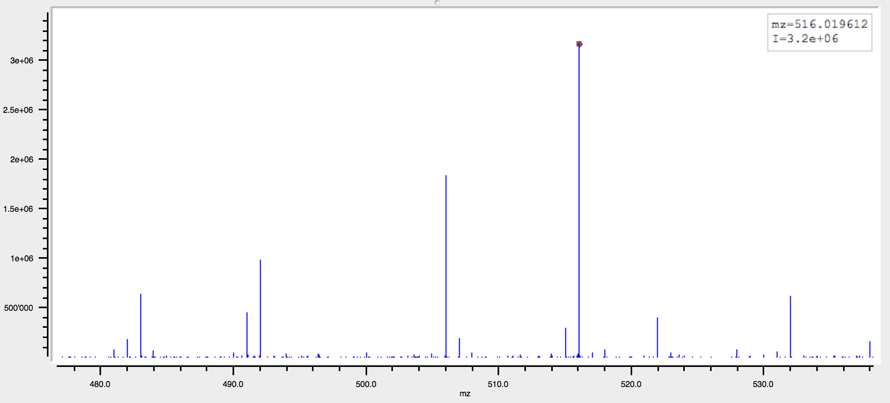
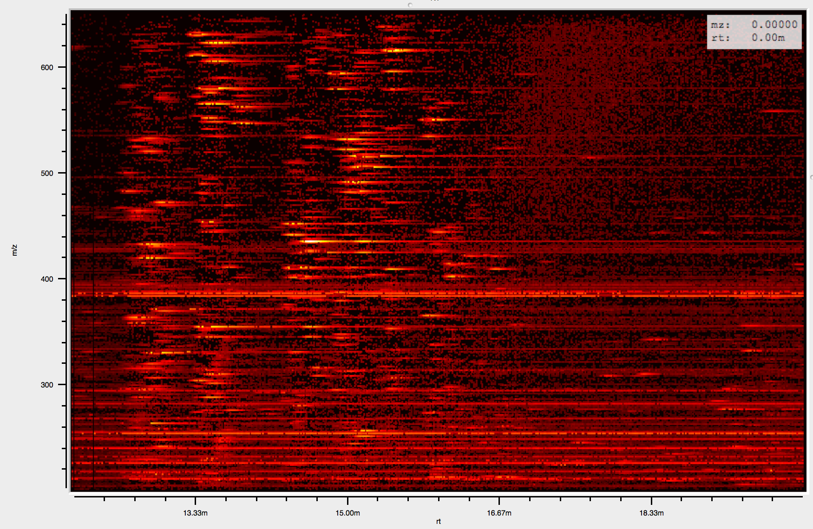

class: center, middle, inverse # emzed  # LCMS workflows the easy way --- class: middle ## mass spectroscopy = Swiss army knife for chemical analytics Single spectrum of mixture of molecules: - x value corresponsds to molecular mass (simplified) - y value is intensity of this mass  --- ## Problem: - molecules as sugars have same mass formula - but have different structure ## Solution: - before we inject a mixture to the spectrometer we do chromatography - here: tube where different sugars "travel" with different speed --- class: middle ## Molecules with same mass arrive in spectrometer with different retention time  --- class: center, middle, inverse # Why emzed ? --- # Software landscape: - Applications: closed boxed solutions with a GUI, easy to use but rigid - C++ libraries: flexible but hard to use - R libraries: quite flexible but no specific GUI - In the lab: mixture of tools, self written scripts (Matlab, R, Perl), Excel sheets -- # How did it start ? - Julia Vorholt and Patrick Kiefer asked for assistance in 2012. - Stategic IT fund of DBIOL payed 4 months of work for emzed 1 --- # Software wishlist: - flexible - easy to use - integrative - interactive graphical data inspection tools -- # emzed concepts: - flexible: workflows are Python scripts - easy to use: workflows compose emzed functions - easy to use: matlab like workbench - integrative: bridges to R and OpenMS - good tools for interactive data analysis --- class: center, middle, inverse # About emzed --- # emzed functions overview - I/O: LCMS data formats, csv - Cherry picked lcms algorithms - Sql like relational tables - Interactive data inspection - Access to chemical data(bases) - Easy GUI creation for minimalistic workflow frontends - Packaging system for distributing workflows (aka emzed modules) --- # Example: I/O + peak picking ````python >>> import emzed >>> data = emzed.io.loadPeakmap("abc.mzML") >>> print len(data) 2332 >>> peaks = emzed.ff.runMetaboFeatureFinder(data, config="std") >>> print len(peaks) 122 >>> first_spec = peaks[0] >>> print first_spec.r ```` --- # Example: Table handling ````python >>> targets = emzed.io.loadCSV("targets.csv") >>> print targets name mf str str ------ ------ water H2O sodium NaCl fullerene C60 cryptonite Kr >>> print emzed.mass.of("H2O") 18.0105650638 >>> targets.addColumn("m0", targets.mf.apply(emzed.mass.of)) >>> print targets name mf m0 str str float ------ ------ ------ water H2O 18.01057 sodium NaCl 57.95862 fullerene C60 720.00000 cryptonite Kr - ```` --- # Example: Table handling continued ````python >>> on_earth = targets.filter(targets.m0.isNotNone()) >>> print on_earth name mf m0 str str float ------ ------ ------ water H2O 18.01057 sodium NaCl 57.95862 fullerene C60 720.00000 >>> hits = peaks.join(on_earth, peaks.mz.approxEqual(on_earth.mz, 1e-3) >>> print hits mz rt name__0 mf__0 m0__0 float float str str float ------ ----- ------ ------ ------ 18.0105 2.21m water H2O 18.01057 >>> emzed.gui.inspect(hits) ```` --- class: center, middle # Result from last command is similar to  --- # Impact - Users report more trust in analysis results - emzed as a playground for testing with new analysis strategies - Several publications from DBIOL related to emzed --- class: center, middle, inverse # emzed online # http://emzed.ethz.ch --- # emzed internals: - Python 2.7 - some C (Cython) extensions for speed - some emzed functions support multicore - GUI based on **PyQt** + **guiqwt** - Workbench is patched **Spyder** - R bridge uses **ruype** (stdio/stdout pipes to R subprocess) - Bridge to **OpenMS** uses Cython (pyOpenMS) --- # Plans - Algorithms for merging several measurement modes - Algorithms for MSMS measurements - Refactor wrapped EAWAG algorithms as emzed extensions - Backporting some modules to emzed: pacer, presettr - Faster R bridge (based on pyRserve) - Rewrite table data structures using pandas. --- class: center, middle, inverse # Questions ? --- class: center, middle, inverse # Thanks !